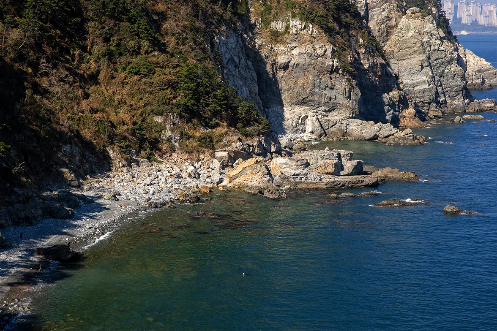
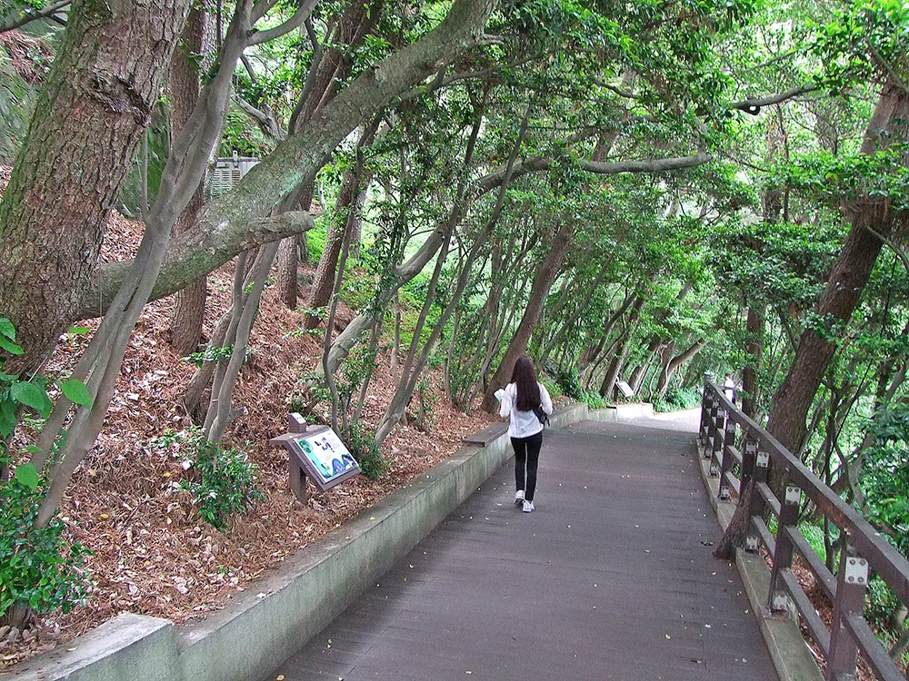
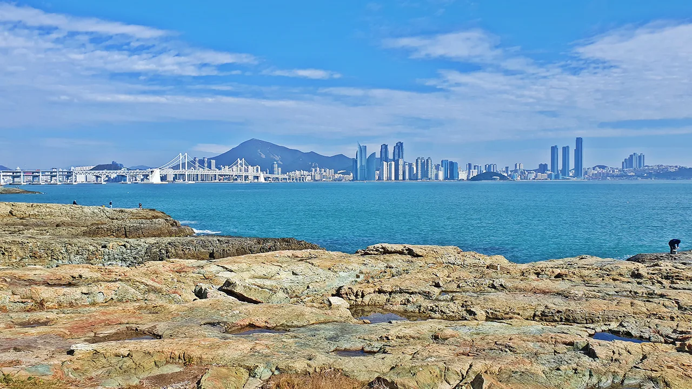
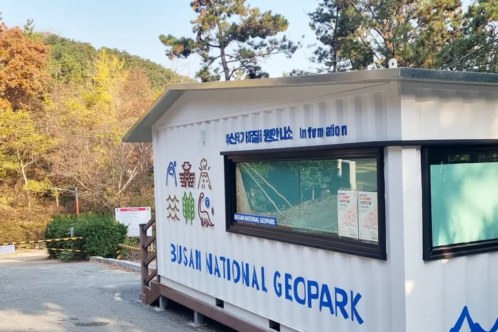

▲ 태종대 기암절벽. 영도 남동단, 파도가 깎아낸 해안 지형이다 ⓒ 부산광역시 지오파크
1. 태종대, 걷거나 열차거나 — 그리고 내 차로도
태종대 순환도로 2.1km는 원칙적으로 걷거나 다누비열차를 타야 합니다. 일반 차량은 기본적으로 진입이 제한됩니다.
다만 저녁 시간대에는 예외가 있습니다. '야간차량개방시간'에는 일반 차량도 대당 4,000원을 내면 순환도로에 들어갈 수 있습니다. 개방 시간은 6~8월 오후 8시부터 10시까지, 9~5월은 오후 6시부터 10시까지로 계절마다 다릅니다.

▲ 태종대 해안 탐방로. 순환도로 옆으로 절벽을 따라 걷는 길이 이어진다 ⓒ 부산광역시 지오파크
| 구분 | 순환 | 편도 |
|---|---|---|
| 성인 | 4,000원 | 2,000원 |
| 청소년 | 2,000원 | - |
| 소인(2세~초등학생) | 1,500원 | - |
| 단체(30인 이상) | 3,000원 | - |
매표 시간도 계절에 따라 다릅니다. 성수기(6~9월)는 오전 9시부터 오후 6시 30분까지, 비수기는 오후 5시 30분까지입니다.
2. 걷는다면 숲길이 대부분이다
순환도로를 걸어서 도는 코스는 울창한 숲길이 이어집니다. 그늘이 많아 여름에도 크게 덥지 않지만, 왕복 시간이 걸리는 만큼 다누비열차 운행 시간과 매표 마감을 고려해 출발 시각을 정하는 편이 낫습니다.

▲ 태종대 순환도로 숲길. 다누비열차를 타지 않으면 이 길을 걸어야 한다 ⓒ 부산광역시 지오파크
3. 이기대, 4.7km는 전부 무료다
이기대 해안산책로는 동생말에서 오륙도까지 4.7km입니다. 입장료 없이 연중무휴로 개방되고, 완주에는 약 2시간 30분이 걸립니다.
코스는 동생말에서 시작해 어울마당, 농바위를 지나 오륙도 해맞이공원에서 끝납니다. 광안대교와 해운대 마린시티 스카이라인이 해안선을 따라 계속 시야에 들어오는 구간이라, 도심 야경과 자연 지형을 함께 볼 수 있는 코스로 꼽힙니다.

▲ 이기대 갯바위에서 바라본 부산 도심. 해안선 너머로 스카이라인이 이어진다 ⓒ 부산광역시 지오파크
4. 값이 붙는 곳은 주차, 그것도 10분 단위
이기대 자체는 무료지만, 코스 끝 오륙도 수변공원 주차장은 유료입니다. 요금이 시간 단위가 아니라 10분당 300원으로 매겨집니다. 1시간이면 1,800원, 2시간이면 3,600원이고, 하루 종일 세워둬도 1일 최대 8,000원을 넘지 않습니다.
완주에 2시간 30분이 걸리는 코스라는 점을 고려하면, 왕복으로 주차하고 걷는 계획이라면 주차 시간이 상당히 길어집니다. 동생말과 오륙도 양쪽에 각각 주차하고 대중교통이나 도보로 돌아오는 동선을 짜는 편이 주차비를 줄이는 방법입니다.

▲ 이기대 해안산책로 데크 구간. 멀리 광안대교가 보인다 ⓒ 부산광역시 지오파크
5. 자차 여행자를 위한 정리
첫째, 태종대를 낮에 간다면 걷거나 다누비열차를 타야 합니다. 저녁에 야간차량개방시간을 노린다면 대당 4,000원으로 직접 차를 몰고 들어갈 수 있습니다.
둘째, 걸어서 돈다면 매표 마감 시각을 넉넉히 잡으십시오. 성수기와 비수기 매표 시간이 한 시간 차이 납니다.
셋째, 이기대는 완주보다 구간을 나눠 걷는 편이 현실적일 수 있습니다. 4.7km 왕복이 부담스럽다면 동생말이나 오륙도 한쪽에서 어울마당까지만 걷고 돌아오는 코스도 있습니다.
넷째, 오륙도 쪽 주차는 분 단위로 계산되는 점을 기억하십시오. 10분당 300원이지만 1일 최대 8,000원으로 상한이 있어, 하루 종일 걷더라도 그 이상은 나오지 않습니다.
정리하면 이렇습니다. 태종대와 이기대 모두 걷는 것 자체는 돈이 들지 않습니다. 다만 차를 어디에 세우고, 열차를 타느냐 마느냐에 따라 하루 비용이 갈립니다.